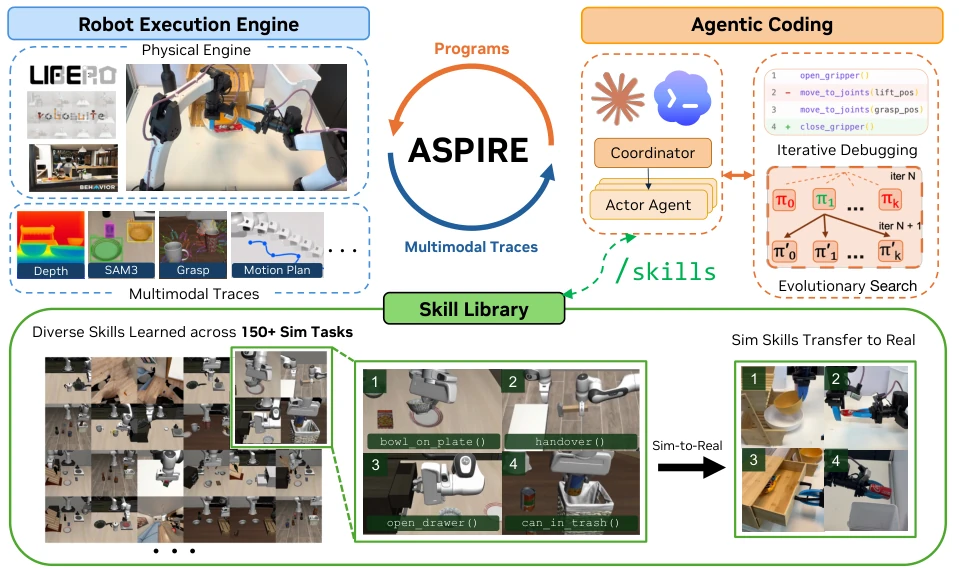
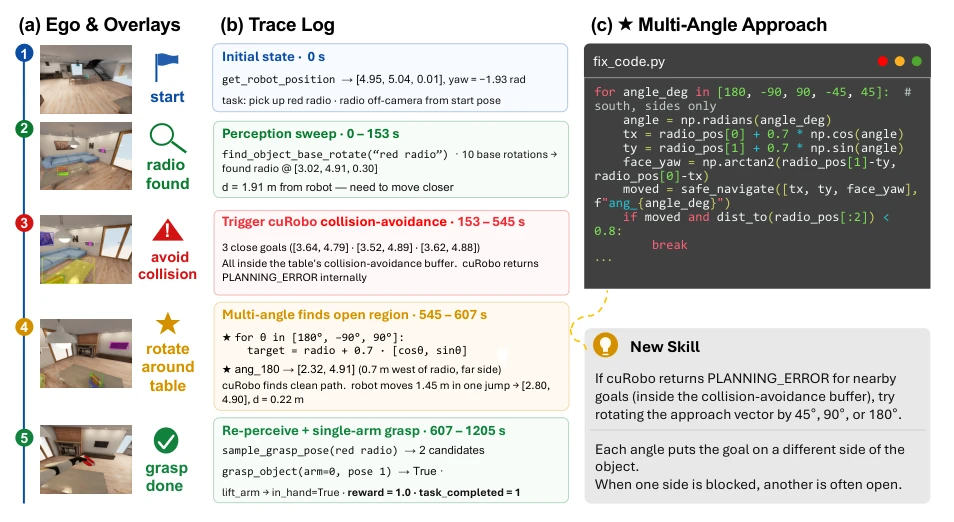
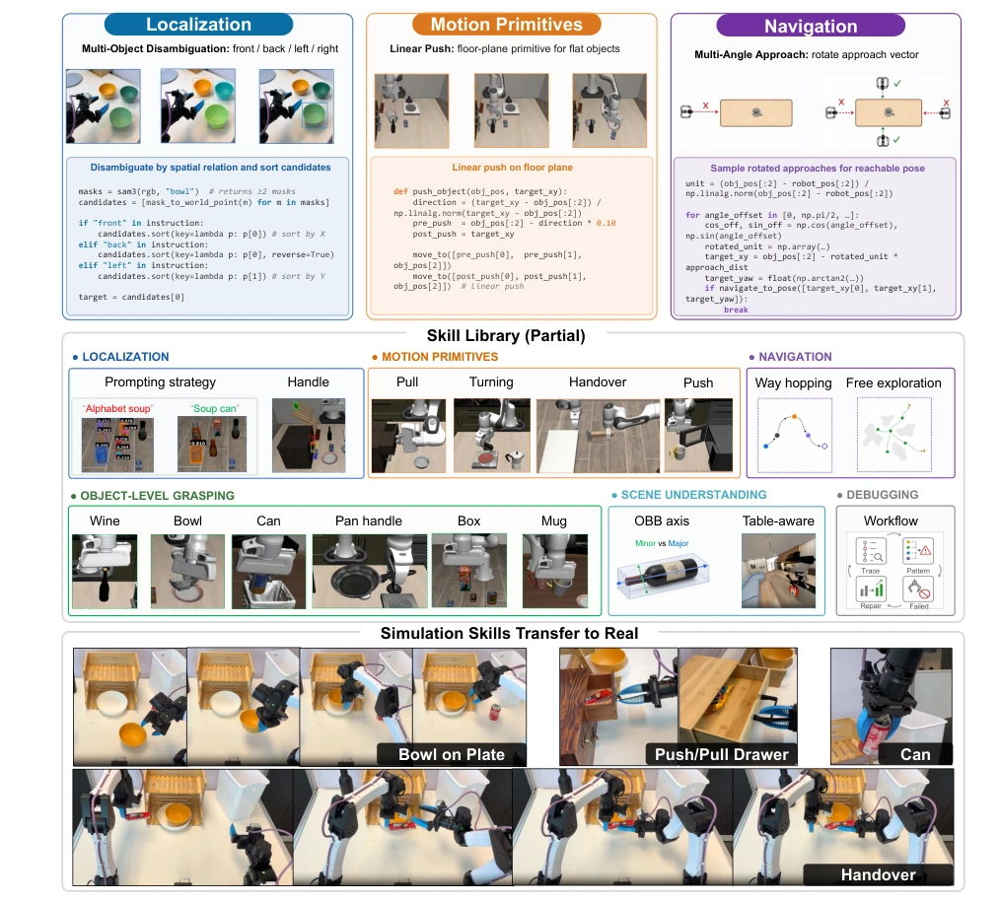
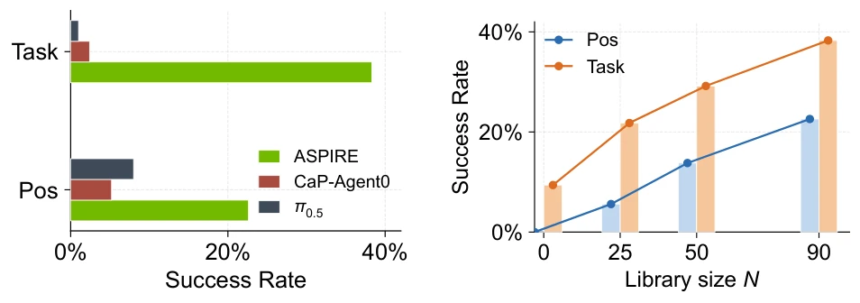
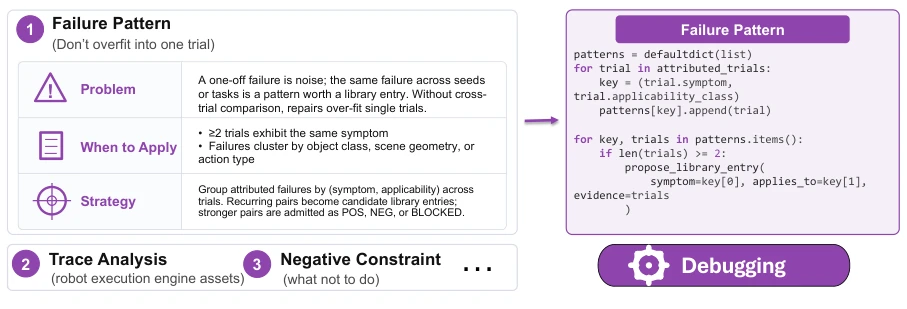
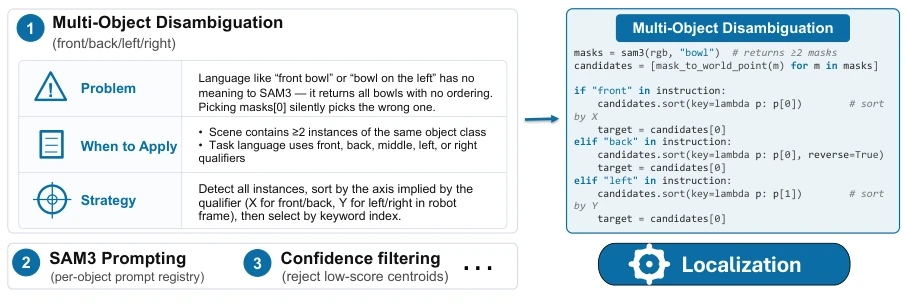
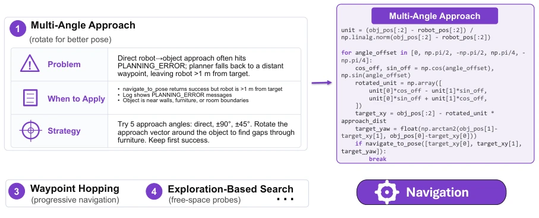
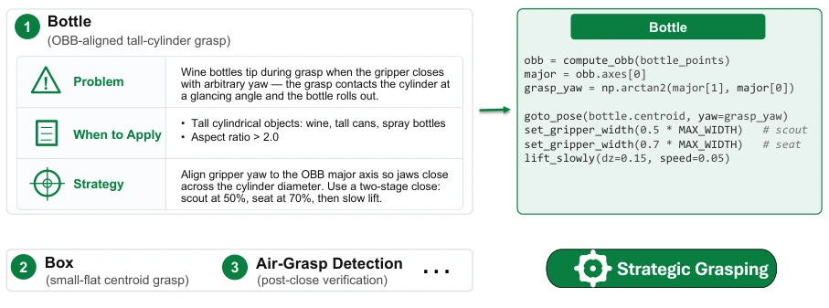
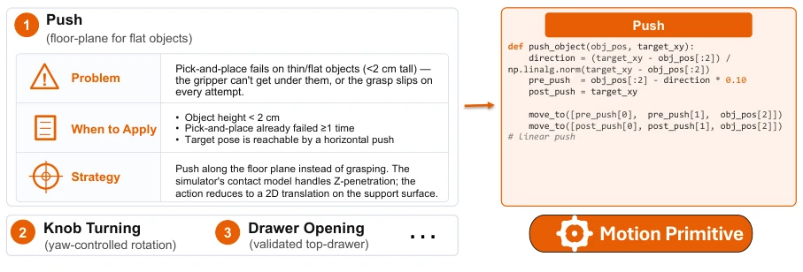
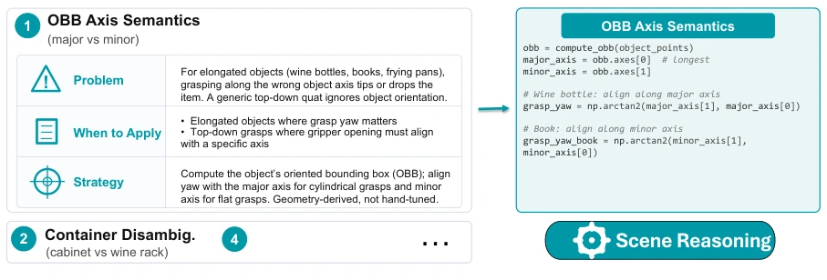

ASPIRE 这系统名字起得挺大，指望机器人像人一样“积累经验”？确实，它搞了个代码即策略的闭环，把调试失败变成了可复用的技能。但别高兴太早，这系统本质上是靠大模型暴力试错堆出来的“技能库”，而不是真正的理解。仿真里玩得花，真机上能省 token 就算胜利，毕竟真机调试成本摆在那。最讽刺的是，它依赖预定义 API，如果任务超出 API 范围，Agent 只能干瞪眼。不过，能把调试痕迹变成可检索的“经验包”，这思路比单纯端到端 VLA 靠谱多了，至少知道哪里错了。它构建了一个开放式的学习循环，让机器人越用越聪明，但计算成本也是实打实的，依赖大模型推理。
The name ASPIRE is quite ambitious, expecting robots to "accumulate experience" like humans? Indeed, it implements a code-as-policy loop, turning debugging failures into reusable skills. But don't get too excited; this system is essentially a "skill library" constructed by large models through brute-force trial-and-error, rather than true understanding. It performs complexly in simulation, saving tokens on real hardware counts as victory, after all, the cost of real-world debugging is there. The most ironic part is its reliance on predefined APIs; if a task exceeds the API scope, the Agent is left helpless. However, turning debugging traces into retrievable "experience packages" is a much more reliable approach than pure end-to-end VLA, at least knowing where things went wrong. It builds an open learning loop, making robots smarter with use, but the computational cost is real, relying on large model inference.
Traditional robot programming is difficult in debugging; existing coding agents often only have coarse-grained task-level feedback, not knowing whether perception failed or planning crashed [Fu et al., 2026]. More fatally, experience is not accumulated; solving the 100th task is no different from the 1st. Human engineers review failures, but existing systems discard repair strategies. Aspire aims to solve this "amnesia" by locating root causes via fine-grained traces and storing repairs in the library. Compared to end-to-end models like OpenVLA or π0, code strategies have stronger interpretability and repairability, but need to solve how to extract general knowledge from failures [Liang et al., 2023]. Existing systems lack fine-grained diagnostic evidence, causing Agents to be unable to determine what evidence to check or what repair strategy to attempt, and unable to reuse experience across tasks.
Overall it is a Coordinator-Actor architecture. Coordinator manages the skill library, Actor writes code. Three core components: 1. Robot Execution Engine: not only gives results, but gives multimodal traces for each primitive (perception, planning, control input/output, visual evidence), allowing the Agent to locate exactly which line of code or which API call failed. 2. Skill Library: stores verified repairs as structured skills (failure signature, applicable conditions, repair code), serving as in-context guidance for subsequent tasks. 3. Evolutionary Search: not only repairs one trajectory, generates multiple candidate programs to explore in parallel, avoiding getting stuck in local repair loops. The data flow is: Actor writes code -> Engine executes and returns trace -> Agent diagnoses -> repairs -> verifies -> Coordinator stores in library. Coordinator audits repairs and stores them, ensuring skills are reusable. The search process generates new programs based on historical performance and failure patterns until the budget is exhausted or the task is solved.

Figure 1: Aspire system overview. A coordinator spawns an actor agent (coding agent) per task, enabling parallel learning across tasks. Each actor refines and validates robot programs through iterative debugging with the robot execution engine, which exposes per-primitive multimodal traces for failure attribution and repair. Evolutionary search samples diverse candidate programs (𝜋0, . . . , 𝜋𝑘), sends each through the engine, and conditions the next generation (𝜋′ 0, . . . , 𝜋′ 𝑘) on surviving programs and residual failure traces. The coordinator writes validated repairs into a shared skill library, which future actors retrieve as in-context guidance; skills discovered in sim can also be adapted as cross-embodiment guidance for real-robot programming.

Figure 2: Robot execution engine. Trace-guided debugging on a BEHAVIOR-1K navigate-and-pick-up-radio task. (a) Ego-view keyframes and overlays show the robot locating the radio but failing to approach it. (b) The primitive trace localizes the failure to repeated PLANNING_ERRORs: candidate navigation goals fall inside the table’s collision-avoidance buffer. (c) The agent patches the program with a multi-angle approach routine, re-perceives the radio from a reachable side, and completes the grasp. The validated repair is admitted as a reusable Multi-Angle Approach skill.

Figure 3: Skill library. Aspire stores validated, agent-discovered repair knowledge as reusable in-context skills rather than a fixed set of human-written primitives. Top: representative entries show learned skills about localization disambiguation, motion-primitive construction, and navigation recovery. Middle: the library grows across heterogeneous categories, including localization, navigation, motion primitives, object-level grasping, scene understanding, and debugging workflows. Bottom: selected skills discovered in sim are used as in-context guidance for real-robot programming, providing evidence that skills can transfer across embodiments. Additional skill examples and prompts are shown in Appendix A.
Tested on LIBERO-Pro, Robosuite, BEHAVIOR-1K. Baselines are CaP-Agent0 and VLA (OpenVLA, π0). Aspire improved by 77% under LIBERO-Pro perturbations, Robosuite dual-arm robot tasks from 20% to 92%. In zero-shot transfer, LIBERO-Pro Long reached 31% success rate, far exceeding the baseline 4%. Real-world experiments show that using simulation skills to guide real-world debugging reduces token consumption and improves success rate (e.g., drawer task from 0 to 11/20). Ablation studies prove Execution Engine contributes the most, evolutionary search solves hard tasks. The skill library grows with task increase, performance improves accordingly, proving the effectiveness of experience reuse.

Figure 5: Cross-task zero-shot transfer on LIBERO-Pro Long. Skills accumulated on LIBERO-90 improve zero-shot performance on held-out long-horizon tasks. Figure (a) compares the full 𝑁=90 library with baselines. Figure (b) shows Pos/Task success as the size of the skill library increases. All success rates are macro-averaged over 10 tasks per axis. Per-task results are in Appendix C.

Figure 7: Debugging skills. Representative skill-library entries that encode reusable debugging strategies, including failure signatures, when-to-apply guards, and validated repair sketches.
其他图片Other Figures

Figure 8: Localization skills. Representative entries for grounding ambiguous language and object references into robust perception and localization routines.

Figure 9: Navigation skills. Representative entries for recovering from motion-planning failures and selecting collision-aware approach poses.

Figure 10: Strategic grasping skills. Representative entries for choosing task-appropriate grasp points and adapting grasp strategy to object geometry and scene context.

Figure 11: Motion-primitive skills. Representative entries for reusable low-level motion patterns, contact-rich alignment, and execution-time recovery.

Figure 12: Scene-reasoning skills. Representative entries for reasoning over spatial relations, support surfaces, occlusions, and scene-level task constraints.